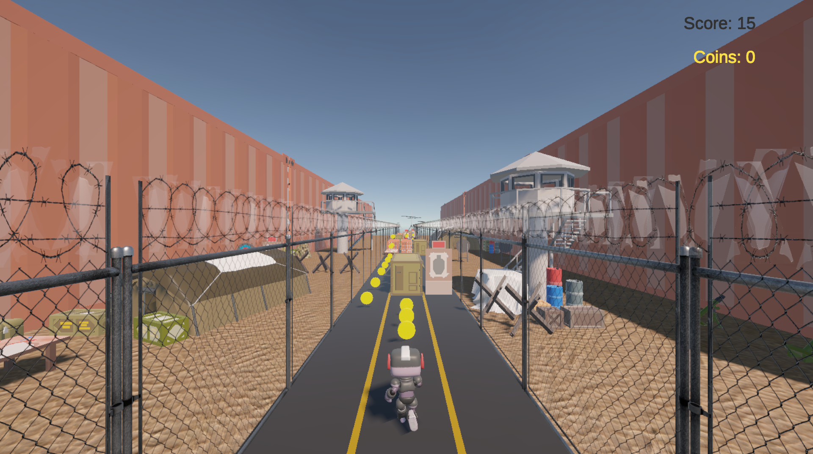

Maxim Medlyarskiy
IT Student
About
I am a passionate student who loves to work on various projects and learn new things. My passion for programming, combined with skills developed through general interest and hands-on experience in game programming with Unity, has sharpened my problem-solving abilities and deepened my programming skills.
I am currently studying International Media and Computing, which revolves around the standard IT-topics, but with more of a focus in image processing, computer graphics, web development and game development.
I am currently in my fifth semester and expect to complete my bachelor's degree in September 2026.
Projects
3D
In my degree program, we learn various aspects of media technology, including 3D design with Maya. This course covers both the technical and creative aspects of 3D modeling and animation.
In addition to theoretical knowledge, we apply our skills in practical projects. For example, here is a 3D model I created as part of my degree program (you can drag your mouse inside the canvas to move the model!):
This is a simple model I created at the beginning of the course when I was just getting started with Maya. Over time, I learned more about modeling techniques and topology, and as a final result, I created a detailed typewriter model, which I originally intended to display here interactively (but due to rendering issues with the Arnold materials and export limitations, I had to fall back to static images instead).
Java
I'm currently working on a Java project titled "Project: Game-Stew" with two other group members. The goal of this project is to develop a web application that recommends board games to users based on other selected board games, game mechanics and genres that are inside the "stew".
Below you can see an illustration of the project:
To ensure that nothing accidentally goes wrong, we frequently use GitLab for version control. Additionally, we use PostgreSQL to store all the different board games from the BoardGameGeek API.
Three.js
This "portfolio" is also a project of mine where I'm using Three.js for the first time. Above, I've already showcased the capabilities of Three.js by adding a 3D model to a canvas and making it rotatable with OrbitControls.
Below, you can see another example of what is possible with Three.js:
Give it a spin!
You can also drag outside the canvas for more colors (which is totally not a bug)!
GLSL
In my computer graphics course, I also learned WebGL, including GLSL (OpenGL Shading Language). In this context, I tried to write my own shader:
This shader creates a dynamic, pulsating "sphere" that responds to time and mouse position. The vertex shader deforms the surface to produce an organic, wave-like motion, while the fragment shader adds a vivid color gradient that shifts over time (it looks even cooler if you turn off wireframe!).
Unity
VR
In addition to my studies, I have also worked on several projects using Unity. One of my most significant projects was a VR-game called "C.H.E.F.", which I developed as part of a team project for the Meta Quest 3. In this game, the player must collect ingredients from alien planets in an endless-runner-style gameplay loop and experiment with them to cook unique recipes.
Here is a short gameplay trailer:
We competed against multiple other bachelor projects and came in second! I led the team, organized our meetings, and took charge of the core game logic as lead programmer.
3D
This was my very first Unity project — a simple "Subway Surfers" style game where the player has to dodge obstacles and survive as long as possible. Through this, I learned the basics of Unity, including object movement, collision detection, simple game logic, and maybe not so basic, procedural generation.
If you'd like to try it out, you can do so here! (Please don't take it seriously, it's purely satire)
2D
I'm currently working on a 2D game inspired by The Binding of Isaac. It's still in active development, and I'm using it to learn new skills that can't be gained through 3D game development, such as 2D collision handling, 2D sprite creation and enemy behavior scripting tailored specifically for top-down 2D environment.

So far, I've implemented basic movement, dungeon generation, animations, and enemy states. Moving forward, I plan to add items, as well as more variety of enemies and bosses!
Skills
- Programming Languages: Java, HTML/CSS/JavaScript, C#
- Tools & Technologies: Three.js, Maya, GitLab/Github, PostgreSQL/SQL, Unity
- Soft Skills: Problem-solving, teamwork, continuous learning
Conclusion
I am excited about the endless possibilities in the field of interactive media and game development. As I continue my studies and personal projects, I look forward to creating engaging experiences, contributing to innovative ideas and advancing my skills further. Thank you for reviewing my portfolio!